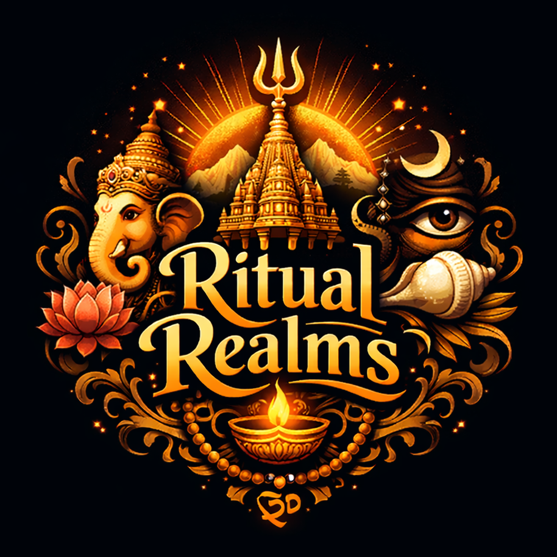

Explore sacred temples across Indian states
Not every journey begins with footsteps — some begin with devotion. Ritual Realms is a gateway into the timeless temples of Bharath, where every sanctum carries centuries of prayers, traditions and divine presence.
Here you don’t just read about temples — you experience them. From Sthala Purana to festivals, from darshan guidance to spiritual meaning, this space is created to feel like entering the temple itself.
Explore sacred temples across the divine lands of Bharat
Walk the divine paths followed by saints and devotees across Bharat. Discover sacred traditions that transcend geography and time.
The 108 sacred Vishnu temples praised by the Alvars, forming the spiritual backbone of Vaishnava tradition and devotion across Bharat.
Begin Divine Yatra →Twelve sacred manifestations of Lord Shiva representing cosmic light and eternal consciousness guiding seekers toward liberation.
Explore Sacred Light →Powerful temples of Divine Mother Shakti symbolizing creation, protection and spiritual transformation across sacred lands.
Enter Divine Energy →Monday, 10 February 2026
“Śrī Nammāḻvār Tirunakṣatram observed today”
Festival Description
Days
Hours
Minutes
Seconds
The sacred heart of Madurai and divine abode of Goddess Meenakshi
The eternal Tirupati where Lord Vishnu blesses devotees
Chola architectural wonder dedicated to Lord Shiva
The divine healer among Divya Desams
Sacred Divya Desam on the banks of Penna River
Find temples near your current location and plan your divine visit.
A temple is far more than a magnificent structure of stone and sculpture. It is a consecrated spiritual center where divine energy is invoked through sacred rituals and Vedic ceremonies. Over centuries, continuous worship, chanting, and offerings create a powerful vibrational field within the sanctum. Devotees often experience deep calm and clarity upon entering. This accumulated spiritual resonance transforms the temple into a living sanctuary of transcendence.
Ancient temple architects followed precise principles from Vastu Shastra and Shilpa Shastras. Every measurement, direction, and structural element is designed to harmonize cosmic forces with human consciousness. East-facing entrances symbolize awakening and welcome the rising sun’s energy. Sacred geometry ensures proportional balance, enabling the temple space to subtly elevate the devotee’s awareness and inner harmony.
Rituals such as Abhishekam, Aarti, and mantra chanting engage the senses in a structured devotional rhythm. The sound of bells, sacred hymns, and fragrance of incense calm the nervous system and focus the mind. Participating in rituals cultivates gratitude, humility, and surrender. Over time, this disciplined spiritual engagement strengthens emotional resilience and deepens one’s connection with the Divine.
Temple festivals are vibrant manifestations of cultural and spiritual heritage. Through sacred processions, music, and ritual offerings, ancient legends are kept alive for each generation. These celebrations unite communities in devotion and service. Festivals reinforce shared values and ensure that sacred traditions continue to flourish with dignity and devotion.
For many devotees, temple visits become transformative experiences. Standing before a consecrated deity inspires reflection, humility, and renewed purpose. The sacred silence and devotional ambience encourage introspection and clarity. While each individual’s journey differs, countless seekers have experienced inner peace and strengthened faith through sincere temple worship.
📍 Chennai, Tamil Nadu, India
📧 ritualrealms@gmail.com
🙏 Built with devotion for seekers of Bharat
🌐 Ritual Realms Spiritual Initiative